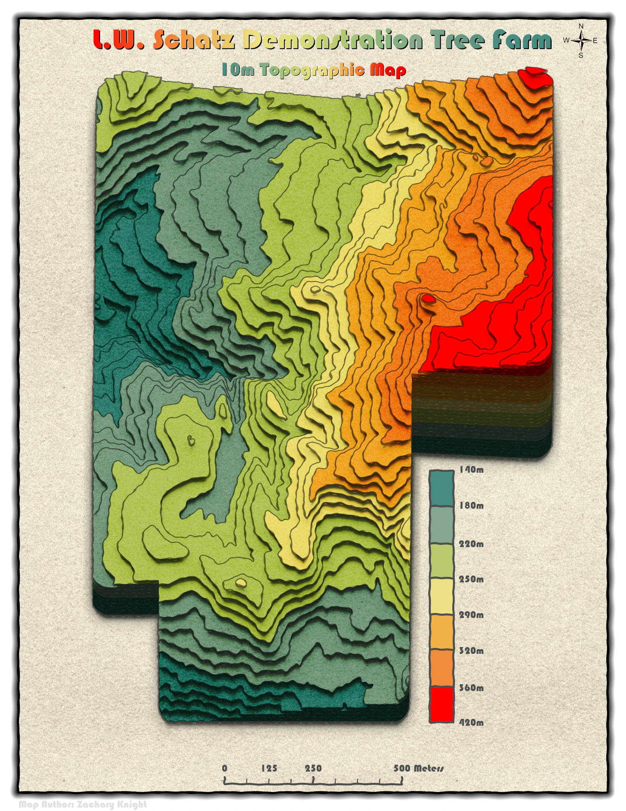

Terrain visualization
Schatz Tree Farm: 10 m Topography
Terrain and elevation

About this map
A 10-meter topographic map of the L. W. Schatz Demonstration Tree Farm. Elevation is communicated with stacked relief-like contours and a graduated color scheme.